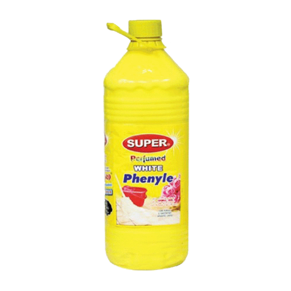

Swan Perfumed White Phenyle
A finely dispersed homogeneous white to off-white natural pine oil based disinfectant
for the general
cleaning of floors, toilets, drains etc. It is highly effective in the presence of high organic
contamination and leaves a long lasting lingering aroma.
Swan Phenyl is used for the purpose of
killing insects and contains hazardous chemicals.
Usage Instructions:
SWAN 25-50ml Clean White Phenyl Concentrate in 1-liter of water and
mix it for a minute. Use the SWAN Phenyl directly on the floor or wipe with a cloth soaked in White
phenyl. You can also add 4 to 5 drops of white phenyl concentrate in half bucket of water and use it
Swan Bleach
This swan liquid bleach keeps the color of the fabric bright, even after repeated washing and brings
life to the old fabrics. ... Because of the extra bleach formula, it brings extra whiteness to your
clothes. swan Bleach makes your clothes soft, smooth & great to wear
swan toilet cleaning acid
Ingredients:HCL 33%
Executively removes layers of SCUM, ALGAE, DIRT & FILTH Deposits,occuring on
chips, Marble and concrete TOILET FLOORS. Safe guards against STINK EFFLUVIA, SLIPPERNESS, and
UMHYGIENIC conditions. Replaces toxic chemicals and is not fumy. Removes organic deposits and scale
from COMMODES.
swan blue
A kind of detergent that is more often used for white clothes so they are clean and dazzling white. A
times Swan Blue leaves a blue tinge in the clothes, this makes them look more shiny in the sun due
to the ultraviolet light. Some people do not like this tinge and would rather use other detergents.
swan Dishwah liquid
Its specially developed formula is mild
on your hands whilst dissolving grease
and dirt on dishes, floors, tiles, glass,
plastic goods & surfaces of electrical
appliances, so even the toughest
backed greasy fo0d comes off quickly
and easily, without any scratch.
Key Ingredients:
Sod. Alkyle
Suiphonate, Sodium Chloride,
Stablizer, Color and Perfume
swan advance handwash
Protects against 100 illness causing germs*
Product Features
100% better germ protection,
pH-balanced liquid hand wash,
Original Pine Fragrance Hand Wash,
Anti-Bacterial,
Best Ever Protection,
Ingredients:
DM Water, Sodium Lauryl Ether Sulphate, Cocamidopropyl Betaine,
Lemon Extract, Neem Extract, cocodie thanolamide
Polysorbate 20, Fragrance, DM DM Hydantoin, polyquaternium-7, Methyl
Chloroisothiacolinone.
TO USE: Wet your hands with water, take desired amount of hand wash
liquid and alther well, rub your hands for at least 20 seconds, scrub all the
surfaces, including ther back of hands, wrists, between the fingers &
fingernails and rinse well.